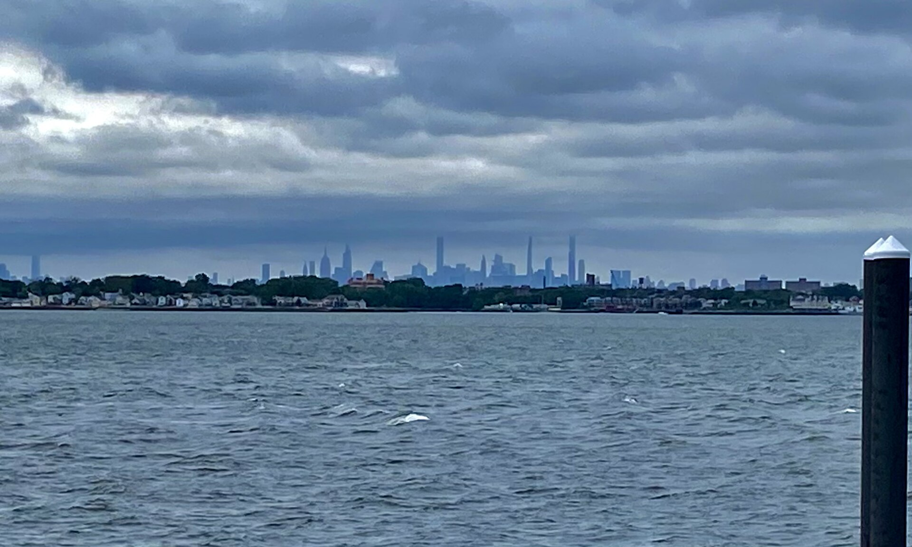

The Bronx Cannabis Friendliness Index
44 Bronx places rated for the cannabis-curious — munchies, gardens, late nights and culture — with the rules spelled out straight.

The Cannabis Friendliness Index rates Bronx places on how well they fit a responsible adult's slow, elevated day. It is not a list of places where you can smoke — under New York law you can't consume cannabis in parks, on beaches, in restaurants or bars (including outdoor dining), in cars, or at workplaces. Think of it as: enjoy at home, then go out and live your best Bronx life.
Starting your day in the South Bronx? Pick up at our sponsor, a licensed dispensary in the Bronx near The Hub, then hit the Bronx Music Hall or Jimbo's on Melrose Ave.
Artuso Pastry
●●●●●Cannoli and sfogliatelle from a family shop open since 1946 — the sweet-tooth finale of any Arthur Avenue afternoon.
Heads up: Grab a box to go.
Bowlerland
●●●●●Late-night bowling (to 1 a.m. Fri–Sat), black-light nights, pool. Peak giggle potential.
Heads up: Cash only; indoor, so no smoking.
City Island
●●●●●A fishing-village strip of seafood, marinas and sunsets with the Manhattan skyline on the horizon.
Heads up: Bring a designated driver or take the Bx29.
Johnny's Reef
●●●●●Fried seafood at the very tip of City Island with open water views — peak golden-hour energy.
Heads up: Outdoor seating is a dining area: no smoking there.
Lickety Split
●●●●●An old-school ice cream parlor on the island's main drag.
Heads up: City Island is a drive or a bus ride — never drive impaired.
Los Munchies
●●●●●Dominican street food — yaroa, mofonguitos, salchipapas — served until 2 a.m. (Jerome Ave to 3 a.m.). The name says it all.
Heads up: Takeout is the move; no smoking in or outside the dining area.
Mike's Deli
●●●●●Heroes stacked with Italian cold cuts inside the historic market. Steps from two licensed dispensaries.
Heads up: Market hours roughly 8 a.m.–8 p.m.; plan your afternoon around it.
Ajo y Orégano
●●●●●Dominican-Cuban comfort food a few blocks off Arthur Avenue.
An Beal Bocht Cafe
●●●●●Irish pub with near-nightly live music, open to 2 a.m.
Heads up: Bar rules: no smoking, indoors or out.
Beatstro
●●●●●A hip-hop-themed restaurant and bar in Mott Haven.
Heads up: Indoor venue; Smoke-Free Air Act applies.
Big Pun mural (Tats Cru)
●●●●●Repainted by Tats Cru every year — living Bronx history.
Heads up: Public sidewalk; be mindful of neighbors.
Brisas del Caribe
●●●●●Dominican and Caribbean plates, known for pernil.
Bronx Alehouse
●●●●●Craft beer bar a short walk from Frass Box.
Bronx Beer Hall
●●●●●A beer hall inside the market, open late some nights.
Heads up: Mixing alcohol and cannabis hits harder — pace yourself.
Bronx Museum of the Arts
●●●●●Always free. Reopens Friday, Oct. 9, 2026 at 6 p.m.
Heads up: Closed through Oct. 8.
Bronx Music Hall
●●●●●WHEDco's venue for Latin, blues and comedy — ¡BAILA! Sept. 12, Bronx Rising Sept. 19.
Heads up: Cashless venue; no smoking inside.
Casa Amadeo
●●●●●New York's oldest Latin music store. Cash only.
Heads up: Call before you go.
Eating Tree
●●●●●Jamaican jerk and oxtail next door to CONBUD's Yankee Stadium shop.
Heads up: Formerly known as Feeding Tree.
El Nuevo Bohío Lechonera
●●●●●Roast pork and Latin plates, built for takeout.
Full Moon Pizza
●●●●●The long-running Arthur Avenue slice shop — fast, cheap, reliable.
Golden Krust
●●●●●The Jamaican patty chain was founded in the Bronx in 1989. Patties travel well.
Heads up: Open 6:30 a.m.–10 p.m. at this location.
Hip Hop Museum Culture Lab
●●●●●The Universal Hip Hop Museum's gift shop and event space, Wed–Sat 11–6, while the full museum targets spring 2027.
Jimbo's Hamburger Palace
●●●●●Cheap griddle burgers, a Bronx staple with a branch in most directions — including Melrose, near The Hub.
Heads up: Hours vary by branch.
Liebman's Deli
●●●●●Kosher deli since 1953 — pastrami and knishes about half a mile from Frass Box.
Heads up: Indoor dining only; no smoking.
Louie & Ernie's Pizza
●●●●●A family pizzeria for more than six decades.
Heads up: Patio seating counts as a dining area — no smoking.
Madonia Brothers Bakery
●●●●●Bread bakery since 1918. Takeout loaves for the couch.
New York Botanical Garden
●●●●●The Haupt Conservatory alone is worth the trip; free Wednesdays for NYC residents.
Heads up: No smoking on grounds.
Regal Concourse
●●●●●Ten screens with recliners, opened March 2025. Popcorn, reclined.
Heads up: Edibles are for home, not the theater.
Tony's Pier
●●●●●Waterfront fried seafood and a raw bar.
Heads up: Deck is a dining area — no smoking.
Wave Hill
●●●●●Hudson River views and quiet gardens; free all day Thursdays.
Heads up: City cultural grounds — treat as no-smoking. Tue–Sun 10–5:30.
Zero Otto Nove
●●●●●Neapolitan pizza and trattoria plates on the same block as Freshly Baked.
Heads up: Sit-down spot; come hungry, leave the vape in your pocket.
1520 Sedgwick Ave
●●●●●The birthplace of hip hop, Aug. 11, 1973. A pilgrimage photo stop.
Heads up: It's a residential building — view from outside and keep it respectful.
AMC Bay Plaza 13
●●●●●Multiplex near Bay Plaza shopping.
Bronx River Greenway
●●●●●Walk or bike the river path for a reset.
Heads up: Smoke-free wherever it runs through parkland.
Bronx Zoo
●●●●●Free Wednesdays with advance tickets — a great slow-walk day.
Heads up: Busy with kids and school groups; no smoking anywhere on grounds.
Charlie's Bar & Kitchen
●●●●●Cocktails and comfort food near the Third Avenue Bridge.
Heads up: Bars can't allow cannabis smoking — indoors or on patios.
Edgar Allan Poe Cottage
●●●●●Poe's last home, in Poe Park. Weekend hours.
Heads up: Park grounds are smoke-free.
Fordham Road sneaker strip
●●●●●Jimmy Jazz, Dr. Jay's and a mile of retail.
Heads up: Crowded on weekends.
Lehman Center for the Performing Arts
●●●●●Fall 2026: Sonora Carruseles (9/26), Milly Quezada (10/17), Ginuwine (11/7).
Heads up: Campus is smoke-free.
Orchard Beach
●●●●●The Bronx Riviera — renovated pavilion, long boardwalk.
Heads up: Beaches and boardwalks are smoke-free by law.
Pelham Bay Park
●●●●●NYC's largest park — trails, salt marsh, quiet.
Heads up: All NYC parks are smoke-free.
Pregones / PRTT
●●●●●Puerto Rican theater and music.
Van Cortlandt Park
●●●●●Trails, a lake and wide-open fields.
Heads up: Smoke-free by law.
Papa Juan Cigar Room
●●●●●A cigar lounge near Yankee Stadium.
Heads up: Tobacco only — cannabis is not permitted.